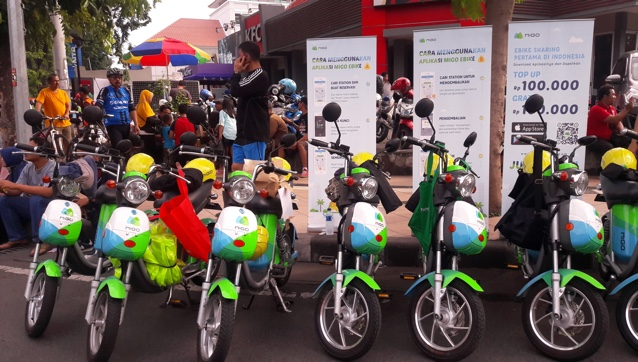
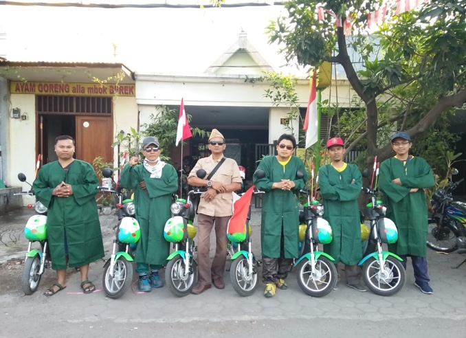
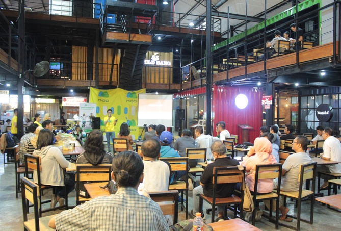

Aktifitas Car Free Day
CFD adalah sebuah inisiatif untuk mengurangi polusi
dan kemacetan di dalam kota dan sekitarnya, mengingatkan kesadaran akan polusi
udara dan pentingnya menjaga lingkungan , serta mendorong masyarakat untuk memilih
pilihan transportasi yang lebih baik demi peningkatan kualitas hidup sosial.
Metode sharing Ebike FoxGo merupakan pilihan transportasi yang lebih hemat,
lebih ramah dan mudah digunakan dibandingkan pilihan transportasi publik lainnya.
FoxGo menyediakan pilihan transportasi hijau yang inovatif dan terjangkau dalam melawan
kemacetan dan polusi urban.
Baca Lebih Lanjut

Konvoi FoxGo Hari Kemerdekaan
Hari kemerdekaan Indonesia ke 73 Tahun. Tanggal 17 Agustus,
Partner FoxGo bersama sejumlah staff FoxGo mengadakan parade menggunakan
Ebike FoxGo untuk merayakan hari kemerdekaan Indonesia
dengan suatu cara yang lebih hijau dan peduli lingkungan.
Ayo promosikan cara baru ini! Kami akan selalu mempromosikan cara baru transportasi yang
lebih hijau dan ramah lingkungan dan berkontribusi pada kemajuan negara ini!
Baca Lebih Lanjut

FoxGo Talk Show
Pada 12 Agustus, kami mengumpulkan mahasiswa-mahasiswa,
organisasi-organisasi sosial dan lingkungan, dan sebagainya untuk bersama-sama
mengikuti acara Talk Show dengan topik Can Electricity Save the Earth? energi listrik yang
menggantikan energi gas alam atau pun minyak bumi untuk mengurangi polusi, mendorong
penggunaan Ebike FoxGo sebagai ganti mobil dan motor;
FoxGo sungguh mengurangi polusi dan menjaga lingkungan.
Baca Lebih Lanjut